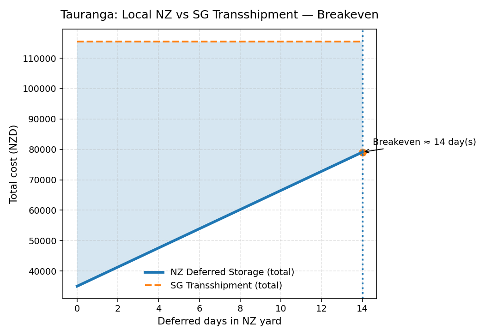
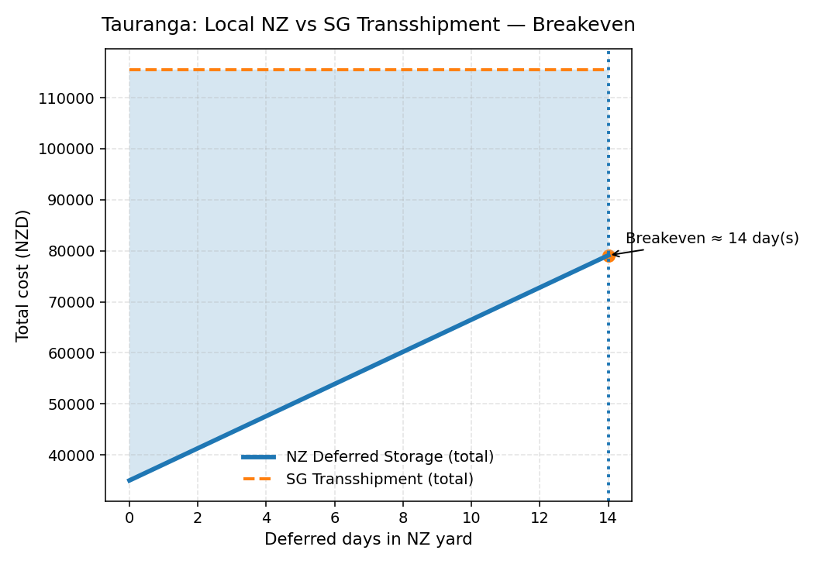
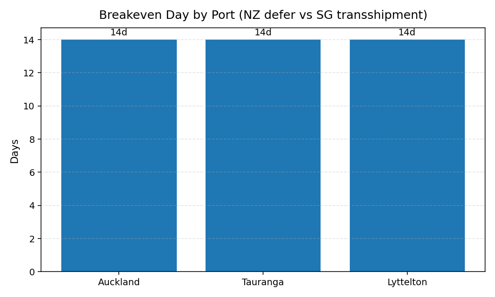
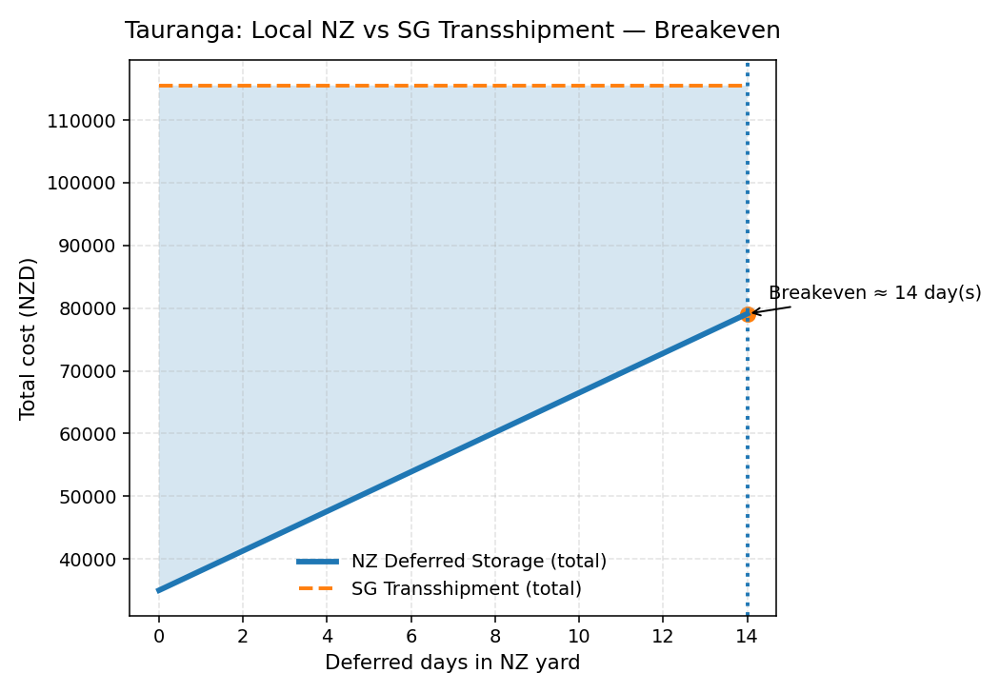

Per-Port Cost Curves
 

Updated 2025-11-03

| Port | Containers | Breakeven_Day | NZ_Cost_at_BE | SG_Transshipment_Total |
|---|---|---|---|---|
| Auckland | 60 | 14 | 67800 | 108000 |
| Tauranga | 70 | 14 | 79100 | 115500 |
| Lyttelton | 65 | 14 | 73450 | 113750 |
Assumptions: NZ yard 45 NZD/day/TEU, Truck 320 NZD/ctn, Wharf 180 NZD/ctn.
SG transshipment totals from prior analysis are used as constant comparison lines.